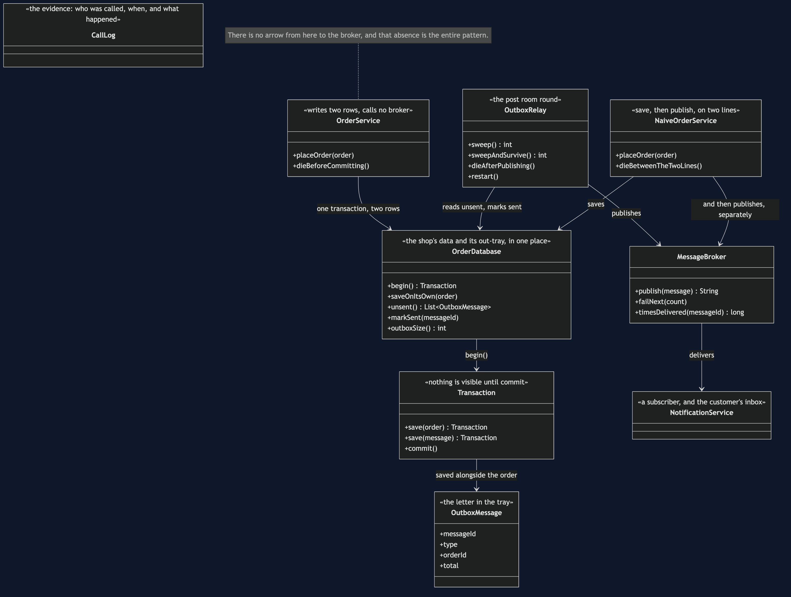
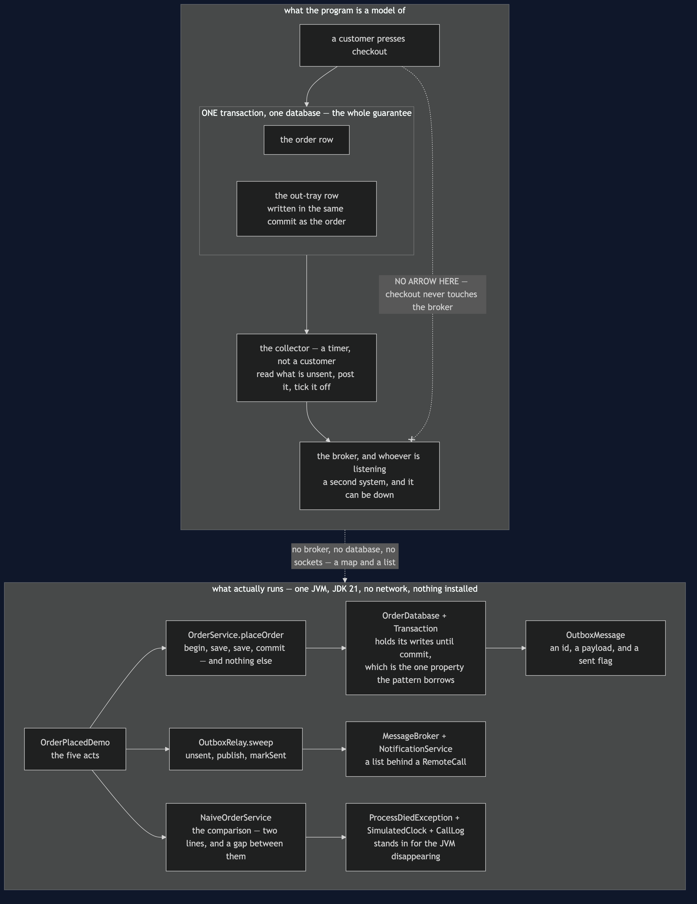
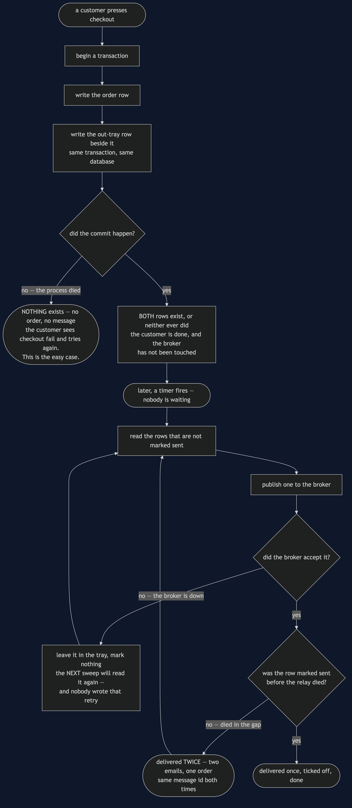
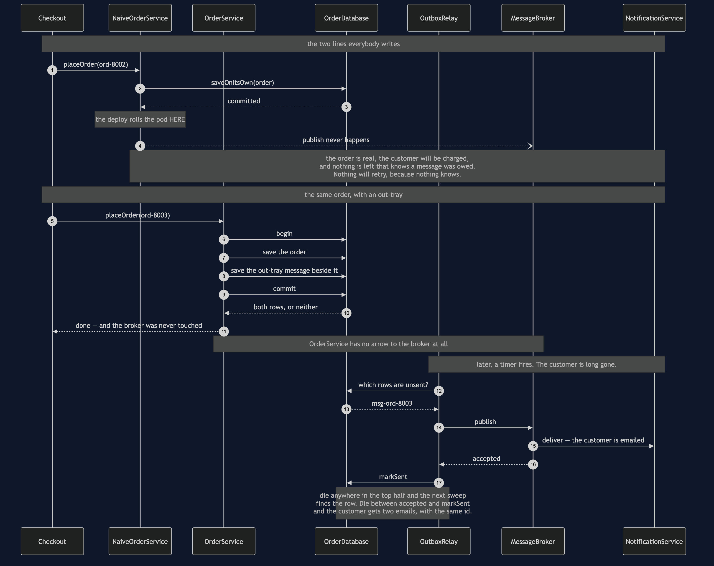
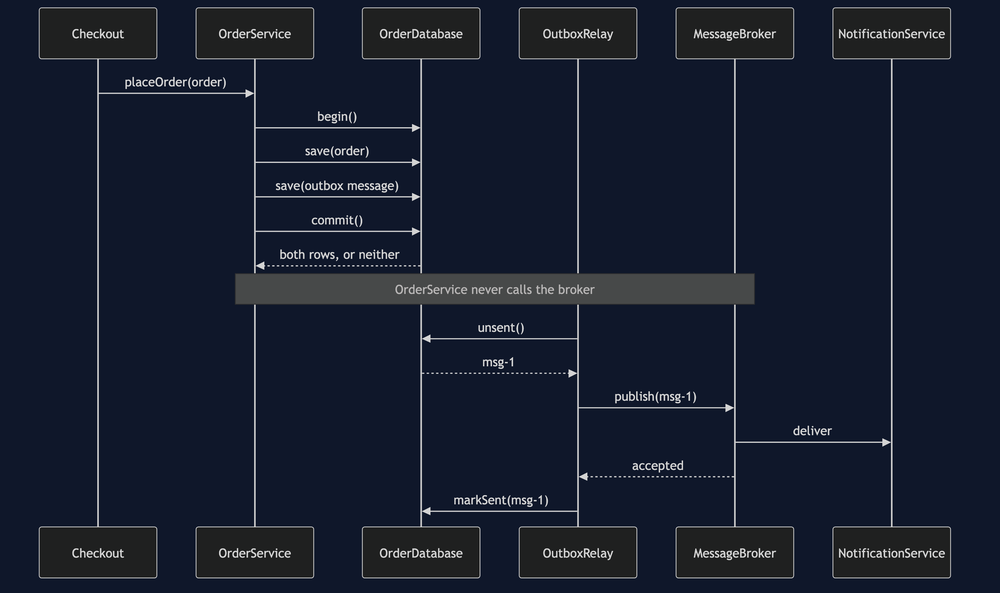
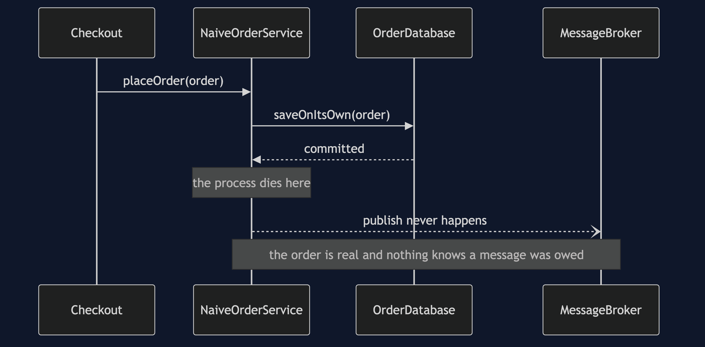
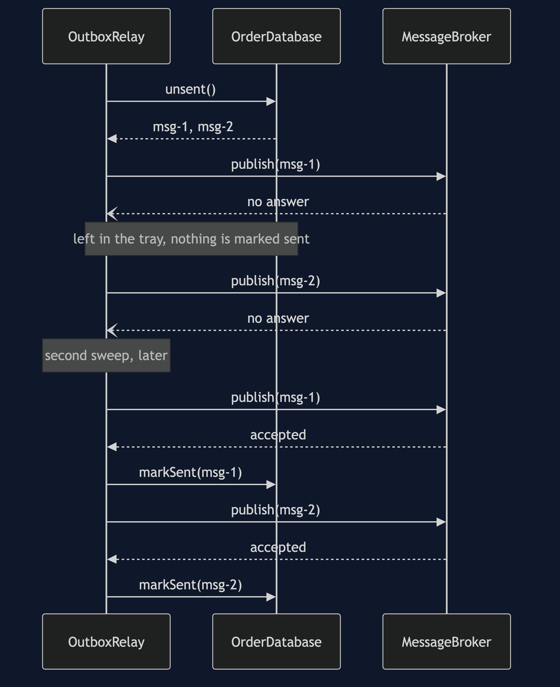
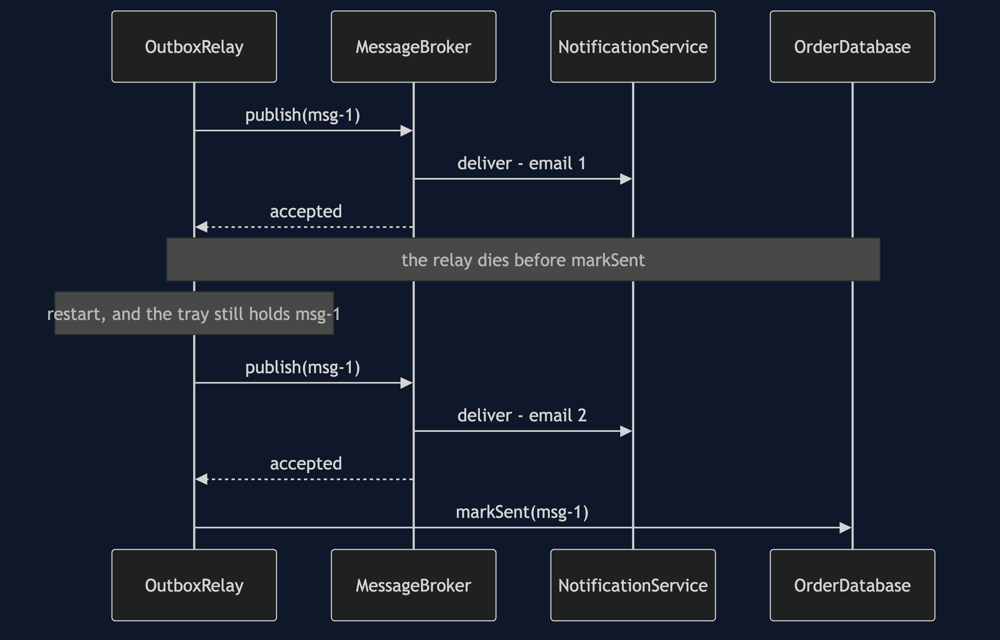
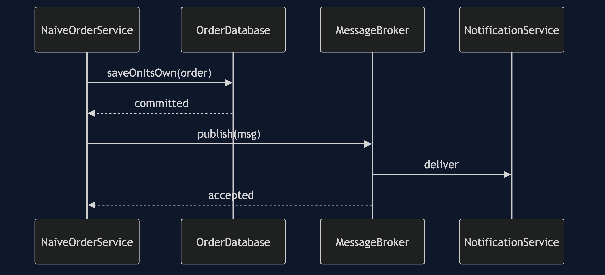

Transactional Outbox
In plain words: when you have to save something and tell somebody about it, do not do two separate things that can half-happen. Write the message into your own database alongside the record, in the same single save, and let a separate job read those messages and send them afterwards.
Everyday analogy: the out-tray on a desk. You do not stop mid-task to run to the post box, because then you are away from your desk with a half-finished job and a letter in your hand. You finish the paperwork and drop the letter in the tray, in one motion, and somebody comes round later to collect it. The letter cannot go missing, because the moment the paperwork was filed the letter was already in the tray. The analogy also predicts the pattern's price: the collector might post a letter, forget they had, and post it again.
In the shop, the Orders service must save the order and publish OrderPlaced so that Notifications can email the customer. Two systems — a database and a broker — and no transaction that covers both.
The two lines everybody writes
database.saveOnItsOwn(order);
broker.publish(event); 0ms -> 0ms OrderDb COMMIT order ord-8001 on its own
0ms -> 15ms Broker OK accepted msg-ord-8001
orders saved: 1, events delivered: 1, emails sent: 1On a good day it is fine, and most days are good days. That is the problem.
The bad day
0ms -> 0ms OrderDb COMMIT order ord-8002 on its own
0ms -> 0ms Orders DIED after the save, before the publish
the order in the database: Order[orderId=ord-8002, ... total=£70.95]
events delivered: 0, emails sent: 0A deploy rolls the pod between the two lines. The order is real and the customer will be charged; nobody will ever be told. Three properties make this one of the worst bugs in distributed systems: it is rare, so it survives testing; it is silent, so nothing alerts; and it is invisible from the order, which looks perfect. The investigation starts three weeks later from the customer's side — "I was charged and never got a confirmation."
And nothing will retry, because nothing is left that knows a message was owed.
Swapping the two lines does not help. Publish first, crash before the save, and you have announced an order that does not exist — Notifications emails a customer about an order the Orders service has never heard of. Neither order is right, because the problem is not the order. It is that there are two of them.
The Singleton connection. This is double-checked locking's bug in a bigger coat. There, two steps that look like one — check the field, assign the field — can be observed half-done, so the fix is to make the pair indivisible with
volatileand a lock. Here the two steps are a database write and a broker publish, and the fix is the same move: make it one step. The tell is identical in both cases — two operations that must both happen, with no single mechanism covering them. Once you can spot that shape, you can spot this bug in code you have never seen.
One commit, two rows
0ms -> 0ms OrderDb COMMIT 1 order(s) and 1 outbox message(s) together
after the commit, before any sweep:
orders saved: 1, messages waiting in the out-tray: 1, events delivered: 0Read OrderService.placeOrder and notice what is missing: there is no call to the broker. The service opens a transaction, saves the order, saves an OutboxMessage next to it, and commits. That is all it does.
The guarantee falls out of the arrangement rather than out of any cleverness. One commit created both rows, so the only way for the order to exist is for the message to exist beside it. bothOrNeither and theMessageOutlivesTheProcess are the two halves of that: a crash before the commit leaves nothing at all and the customer simply retries checkout, and a crash after it leaves a message that the next sweep finds.
OutboxRelay.sweep is the person collecting the tray: read the unsent rows, publish each, mark it sent. In a real shop it is a scheduled job polling a table, or a process tailing the database's change log.
The broker can be down and nobody minds
two customers checked out while the broker was unreachable
first sweep, broker still down: published 0
messages still in the out-tray: 2
broker comes back. Second sweep: published 2Two free benefits, both worth naming. Checkout no longer depends on the broker being up, so customers keep buying through a broker outage. And a message the broker refused stays in the table and goes out on the next sweep — nobody wrote any retry logic; the retry is a consequence of where the message is kept.
What the guarantee costs
0ms -> 15ms Broker OK accepted msg-1
15ms -> 15ms Relay DIED after publishing msg-1, before marking it sent
15ms -> 30ms Broker OK accepted msg-1
times message msg-1 was delivered: 2
emails in the customer's inbox: 2Between the broker accepting a message and markSent recording it, there are two systems again — and this time nothing can be done about it, because the second system is the broker. If the relay dies in that gap, the table still says unsent and the next sweep publishes the message a second time.
This is at-least-once delivery. It is not a flaw in OutboxRelay to be apologised for; it is the deal. The only two guarantees on offer are possibly twice and possibly never, and this pattern chooses the first. deliveryIsAtLeastOnce pins it down as a passing test rather than a footnote.
Two more costs, stated plainly. A relay is another moving part to deploy, monitor and alert on, and a relay that is quietly not running looks exactly like a quiet Tuesday. And the outbox table needs housekeeping, or it grows forever.
Which is why the next pattern is not optional
NotificationService keeps no record of what it has already handled, so the duplicate becomes two identical emails. Two emails is embarrassing. Had the subscriber been Payments, it would have been two charges.
The one thing that makes the duplicate fixable is in the demo's last line: the message id was the same both times. theDuplicateIsRecognisable asserts exactly that. A receiver that writes down the ids it has handled can throw the second copy away, which is the Idempotent Consumer pattern, and it is what makes at-least-once delivery liveable.
One JVM, no infrastructure
No broker, no database, no sockets, and nothing sleeps. OrderDatabase.Transaction holds its writes until commit, which is the one property the whole pattern borrows. MessageBroker is a list behind a RemoteCall, so publishing costs simulated milliseconds and can be scripted to fail. ProcessDiedException stands in for the JVM disappearing — in real life the catch block never runs, and the tests say so in a comment where they catch it.
Technologies and versions
Nothing here is a range and nothing is latest: a course that worked last year and does not work today is worse than one that never took the dependency.
| What | Version | Why it is here |
|---|---|---|
| Java | 21 | The repository standard, requested through the Gradle toolchain block |
| Gradle | 9.2.1 | The wrapper in this directory; no separate install needed |
| JUnit 5 | 5.10.2 | The 18 tests, through junit-bom so the Jupiter artefacts cannot disagree |
That is the entire list, and the short version of it is the point. This project has no runtime dependency at all — the dependencies block in build.gradle names nothing but JUnit, and JUnit is testImplementation. There is no Kafka, no RabbitMQ, no Postgres, no JDBC driver and no container; the database is a map whose transaction holds its writes until commit, and the broker is a list. Every one of the twelve projects in this category is built the same way, so a reader who can run one can run all of them, offline, with a JDK and nothing else.
Learning Material
| File | What it is for |
|---|---|
docs/problem-statement.md | The order that is real, and that nobody will ever be told about |
docs/transactional-outbox-pattern-explained.md | The full explanation, readable on its own |
docs/class-diagram.md | Service, database, relay and broker — and the arrow that is missing |
docs/architecture-diagram.md | Which boundaries the checkout crosses, and the one it deliberately no longer crosses at all |
docs/data-flow-diagram.md | Three places the process can die, and what each one leaves behind |
docs/sequence-diagram.md | The same crash at the same instant, with and without an out-tray |
docs/uml-diagram.md | The five acts as sequences, including the crash in the gap |
docs/prerequisites.md | What you need first, and what you explicitly do not |
docs/session.md | A one-hour taught session, with the arguments to expect |
docs/animation.html | Twelve steps in a browser, narrated, that you can pause |
docs/youtube.md | Title, description and chapters for publishing |
video/README.md | The sixteen scenes, and why three of them cannot be cut |
video/scenes.py | The script itself, narration and all |
The pattern in one picture

OrderService writes two rows in one transaction and never calls the broker. OutboxRelay reads what has not been sent, publishes it, and marks it sent. That absent arrow between the service and the broker is the entire pattern.
What runs where
The lower half is the literal truth: one JVM, a map and a list. The upper half is the shop, with one transaction covering the order and the out-tray row together, and a crossed-out line where the checkout is not allowed to touch the broker.

How the data moves
One order from checkout to inbox, with three places marked where the process may die. Two of them are harmless. The third is the duplicate, and it is the bill.

Who calls whom, in order
The same crash at the same instant, twice. The upper half has no second act; the lower half has a sweep that runs later for an entirely different reason.

All five acts
The full set from docs/uml-diagram.md, in the order that document argues them — which is by argument rather than by number.
Three. One commit, then a sweep. The checkout ends at the commit, and the broker is touched later, in another process, by a timer.

Two. The naive version, and the gap. There is no second half to this diagram, and that is the whole comparison.

Four. The broker is down. Nothing in this picture is retry logic. The second sweep reads the same rows because nobody marked them sent.

Five. The duplicate. Two emails, one order, and the same message id on both — which is the only thing the receiving side needs.

One. For completeness. The happy path, which is what every test written against the naive version will see.

Video
A narrated walkthrough, about eleven minutes across sixteen scenes: the two lines everybody writes, the deploy that lands between them, the out-tray that fixes it — and the duplicate email that is the price.
Build it with cd video && python3 make_slides.py && ./build_video.sh. The rendered file is not committed; the sources are.